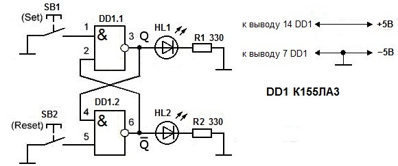
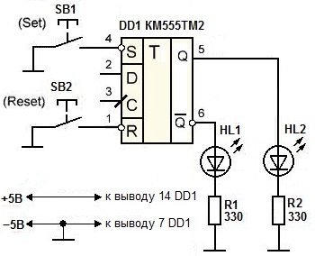

Исследование работы триггеров
RS-триггер на микросхеме К155ЛА3
Схема выполнена на логических элементах 2И-НЕ. Собранная схема имеет всего лишь два устойчивых состояния "0" или "1". Вывод 14 микросхемы К155ЛА3 подключается к "плюс" питания, вывод 7 - к "минус" питания.

Рис. 1 - Схема RS-триггера на логической микросхеме К155ЛА3
Таблица 1
| Обозначение | Наименование | Номинал | Количество | Примечание |
|---|---|---|---|---|
| DD1 | Микросхема | К155ЛА3 | 1 | |
| HL1, HL2 | Светодиод | АЛ307 | 2 | красного и синего цвета свечения |
| R1, R2 | Резистор постоянный | 330 Ом / 0,25 Вт | 2 | |
| SB1, SB2 | Кнопка | 2 | без фиксации |
После того, как на схему будет подано напряжение питания, загорится один из светодиодов.
При однократном нажатии на кнопку SB1 (Set - установка), RS-триггер устанавливается в единичное состояние. При этом должен засветиться тот светодиод, который подключен к прямому выходу Q. Это свидетельствует о том, что триггер «запомнил» "1" и выдал сигнал об этом на прямой выход Q. Светодиод, который же подключен к инверсному выходу Q, должен погаснуть. Инверсный – это значит обратный прямому. Если на прямом выходе "1", то на инверсном "0".
При повторном нажатии на кнопку SB1, состояние триггера не изменится – реагировать на нажатия кнопки он не будет. В этом и заключается основное свойство любого триггера – способность длительное время сохранять одно из двух состояний. По сути, триггер - это простейший элемент памяти.
Чтобы сбросить RS-триггер в ноль (т.е. записать в триггер логический "0") нужно один раз нажать на кнопку SB2 ( Reset - сброс). При этом светодиод на прямом выход Q погаснет, а на инверсном выходе Q загорится. Повторные нажатия на кнопку SB2 состояние триггера не изменят.
Данная схема RS-триггера не имеет защиты от помех, а сам триггер является одноступенчатым.
Также стоит отметить, что на этой схеме выводы установки S, сброса R, прямого Q и инверсного выхода Q показаны условно – их можно поменять местами и суть работы схемы не изменится. Это всё потому, что схема выполнена на неспециализированной микросхеме.
Схема RS-триггера на микросхеме КМ555ТМ2
Микросхема КМ555ТМ2 содержит два D-триггера. Эта микросхема выполнена в керамическом корпусе, поэтому в названии присутствует сокращение КМ. Также можно применить микросхемы К555ТМ2 и К155ТМ2. Они имеют пластмассовый корпус.
D-триггер несколько отличается от RS-триггера, но у него также присутствуют входы для установки (S) и сброса (R). Если не использовать вход данных (D) и тактирования (C), то на базе микросхемы КМ555ТМ2 легко собрать RS-триггер (рис. 2).

Рис. 2 - Схема RS-триггера на микросхеме КМ555ТМ2
Таблица 2
| Обозначение | Наименование | Номинал | Количество | Примечание |
|---|---|---|---|---|
| DD1 | Микросхема | КМ555ТМ2 | 1 | К555ТМ2, К155ТМ2 |
| HL1, HL2 | Светодиод | АЛ307 | 2 | красного и синего цвета свечения |
| R1, R2 | Резистор постоянный | 330 Ом / 0,25 Вт | 2 | |
| SB1, SB2 | Кнопка | 2 | без фиксации |
В схеме применён только один из двух D-триггеров микросхемы КМ555ТМ2. Второй D-триггер не используется. Его выводы никуда не подключаются.
Так как входы S и R микросхемы КМ555ТМ2 являются инверсными (отмечены кружком), то переключение триггера из одного устойчивого состояния в другое происходит при подаче на входы S и R логического 0.
Чтобы подать на входы "0", нужно просто соединить эти входы с минусовым проводом питания. Сделать это можно как с помощью специальных кнопок, например, тактовых, как на схеме, так и с помощью обычного проводника. Кнопками, конечно, это делать гораздо удобнее.
Нажимаем кнопку SB1 (Set) и устанавливаем RS-триггер в единицу. Светится светодиод HL2, который подключен к прямому выходу триггера (Q).
Нажимаем кнопку SB2 (Reset) и сбрасываем триггер в нуль. Cветится светодиод HL2, который подключен к инверсному выходу триггера (Q).
Стоит отметить, что входы S и R у микросхемы КМ555ТМ2 являются приоритетными. Это значит, что сигналы на этих входах для триггера являются главными. Поэтому если на входе R нулевое состояние, то при любых сигналах на входах C и D состояние триггера не изменится. Это утверждение относится к работе D-триггера.
Можно использовать зарубежные аналоги микросхем стандартной транзисторно-транзисторной логики (ТТЛ):
- 74LS74 - аналог К555ТМ2,
- SN7474N и SN7474J - аналоги К155ТМ2,
- SN7400N и SN7400J - аналоги К155ЛА3.